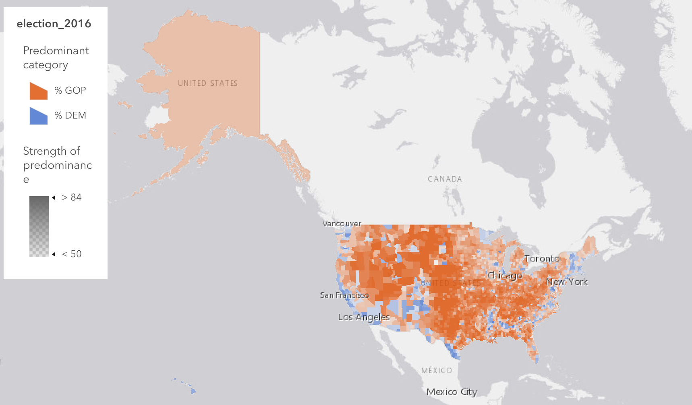
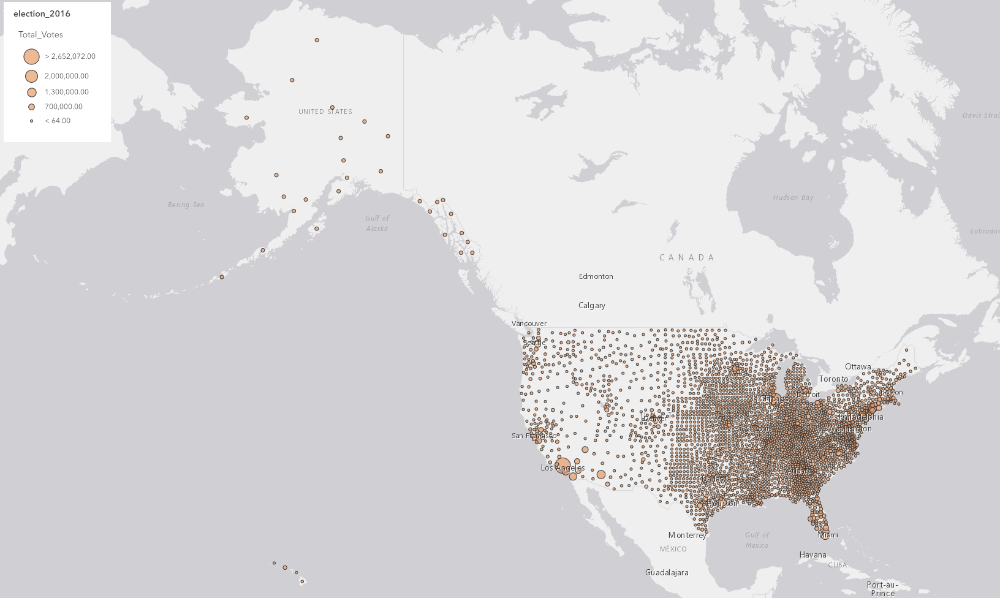
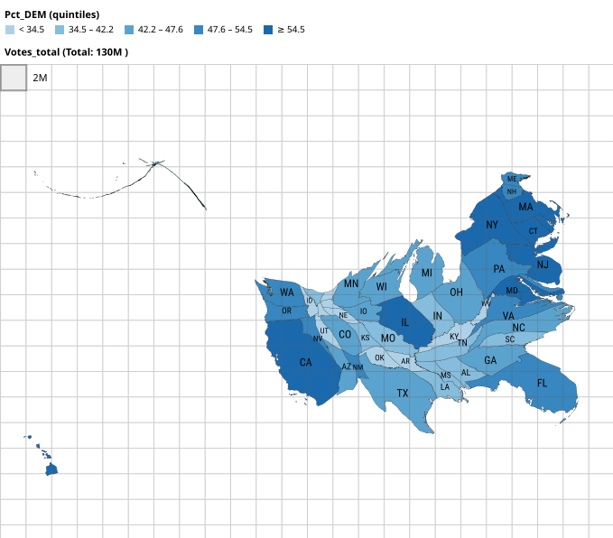

Lab 02 · September 2026
Four Maps: What Presentation Reveals
The question
Where was the support for democrats concentrated?
The data
The data was taken from a Esri-hosed teaching web map covering 2016 US county returns, and one CSV provided with this lab that adapted the data from said Esri-hosted teaching web map. The link to the data is https://www.arcgis.com/apps/mapviewer/index.html?webmap=ac840a515878442b8ad666a4f7b32daf.
A few issues were found with the data set. First, the DEM_votes field is empty, and in its place is the votes_DEM field, which could easily cause errors. Second, the percent symbol % in the aliases of DEM_per and GOP_per is a lie, as those are listed in terms of proportions and thus are off by a factor of 100. Third, DEM_per and GOP_per do not add to 1 as other parties, which accounted for up to 10% of the vote in some areas, were not listed in this table. Furthermore, because Alaska does not report presidential results by borough but by state house districts, the data for Alaska was duplicated 28 times. The CSV that adapted this data rectified this issue. Lastly, although the 2016 certified results counted 65,853,514 democrat votes and 62,984,828 republican votes, even when accounting for duplication in Alaska, this data sums to 62.5 million democrat votes and 61.2 million republican votes. This difference of several million shows some states were significantly undercounted in some way.
The method
Map 1 uses the default ArcGIS Predominant category map using both DEM_per and GOP_per as fields, though the color palette was chosen for ease of understanding. Map 2 uses graduated symbols with circles of various sizes with a transparent fill and solid outline through ArcGIS’s Counts and Amounts (size) style. The sizes represent the amount of voters in each county, by the data’s total_votes field, and the sizes were chosen to not be too dense. Map 3 uses standardised score through the z-score formula
z = (value - mean) / standard deviation
and computed using the arcade formula
return ($feature.DEM_per - mean) / sd;
The mean and sd values were set at 0.32 and 0.15, respectively, as dictated by the data’s statistics. It is worth noting that the z-score is measured against the national county average, with the break-even point of 50% democratic votes occurring at a z-score of about +1.2. The last map, map 4, is a cartogram generated with go-cart.io using the data from the Esri map, modified to remove Alaska’s duplication by making it only one statewide figure. The total vote count issue was kept, and counties were allocated by state for the purpose of the cartogram.



What I found
Maps 1 and 3 show that democrats are more popular near cities and urban areas and near the coast, while being less popular in other locations, though democrats lose a lot of counties due to rural areas making up a large percentage of the counties in the United States. Map 2 shows the areas where democrats have a higher percentage of the vote also have high populations. Furthermore, Map 4 shows this in more detail by displaying both the vote count by size and the percentage of democrats by color, albeit in a complicated way. Different ways of classifying the percentage of democratic votes can exaggerate or minimize this effect in a map, as shown in three classification schemes I tested. For example, a republican campaign would probably use Map 1, as it shows how they are more popular in more locations due to being popular in the numerous rural counties, while democrats would probably prefer Map 3 as it is simple and shows more widespread popularity. Personally, I would publish the Cartogram as, although it can be confusing at first glance, it shows both the voting population of each state and how that state voted in one place while being easy to understand once the format is understood.
What this does not show
Besides the already listed flaws about Alaska, mislabeled and empty data columns, and miscounted total votes, the data in both the Esri map and the adapted version for the Cartogram do not include third party voters and non-voters. Furthermore, the data does not reveal where it comes from.
AI use: No AI tools were used for this entry, but a search engine was used to discover the names and use of the "code" tag and figuring out how to add a white background to a "img" tag loading a .svg file. Also, https://tabletomarkdown.com was used for the disclosure block below.
Reflection
If I had to choose, I would use the natural breaks method as it shows the most cleanly how nearby counties gradually change in terms of their political leanings for the most part and outliers do not seem to skew the coloration as much. The equal interval classification scheme would instead argue that democratic support is spotty and weak, as outliers have skewed the classification. Readers of the map could correct for this somewhat using the legend and realize the issue, but it would be difficult to do so.
As for the midpoint, it is set to the average county’s percentage of democratic votes at around 32%. This asserts that democrats are unpopular while flattering the republican side as more rural counties exist, and rural counties tend to vote republican. I would have chosen the nationwide vote percentage as the midpoint as it is more representative of the whole country as it weights by population and not location.
A decision that could be worse off if a display rule was made carelessly is the amount of money to spend on campaigning. If a county is close to 50% votes in one party’s favor, they would likely campaign to try to push that area in their favor, while a county more solidly in their grasp would be less of a priority.